Leren over jezelf en Reflecteren
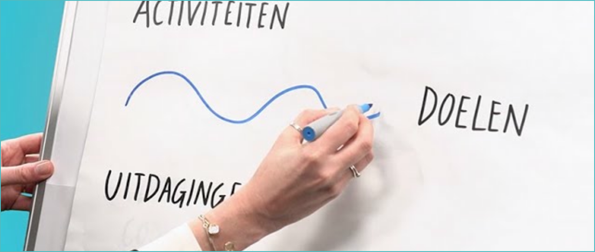
-
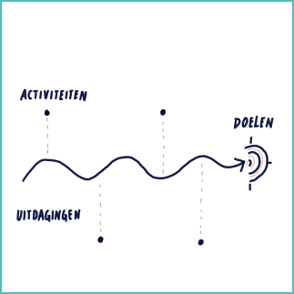
Roadmap -
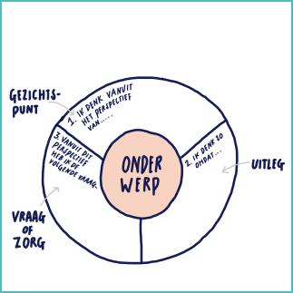
Cirkel van gezichtspunten -
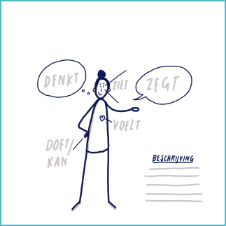
Over 5 jaar -
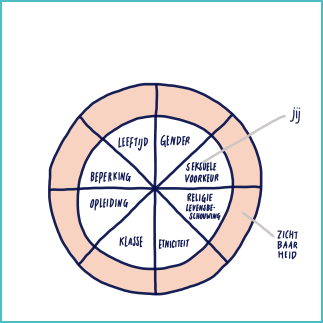
Diversiteitscirkel -
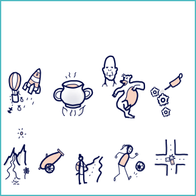
Metafoor -
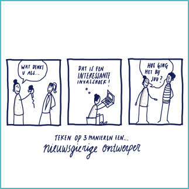
Kwaliteiten tekenen -
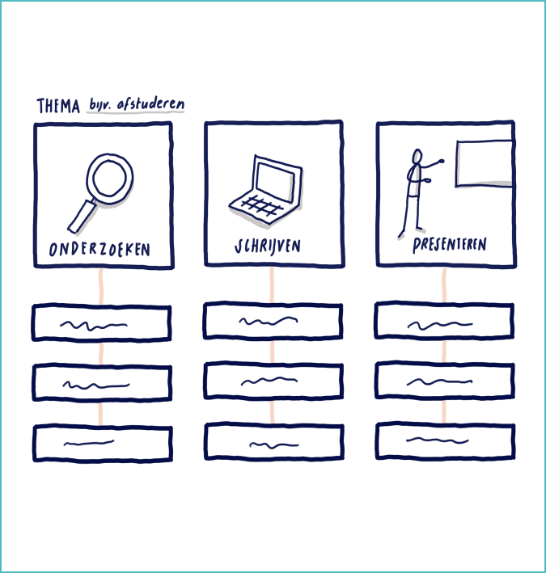
Stroomschema -
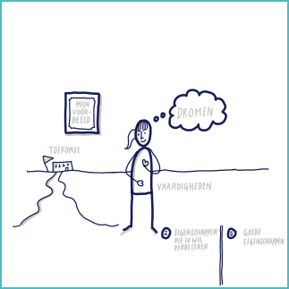
Mijn gebruiksaanwijzing -
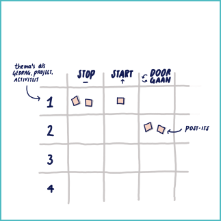
Stop-start-doorgaan -
Welke methodes kan ik gebruiken om een reflectief vakproces visueel te maken?
-
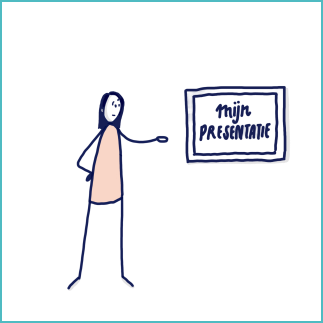
Reflecteren op een situatie -
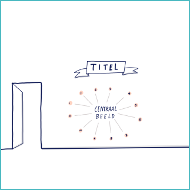
Sketchnote op de muur